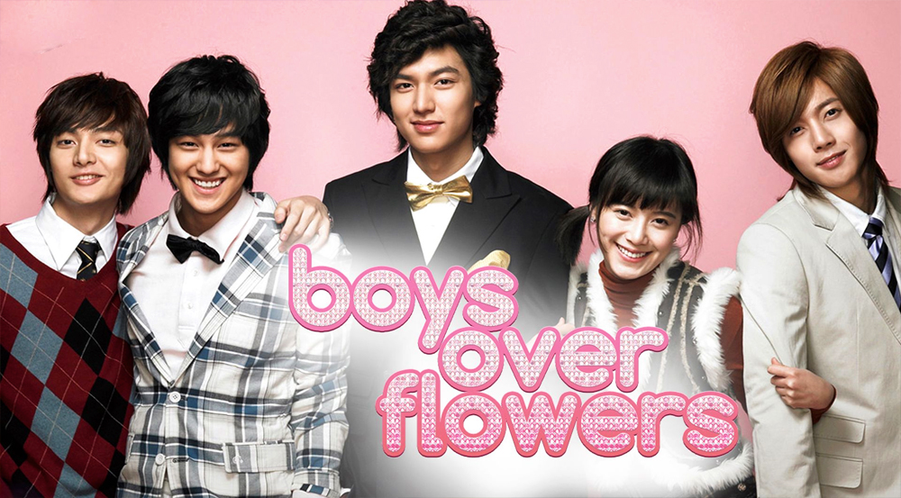
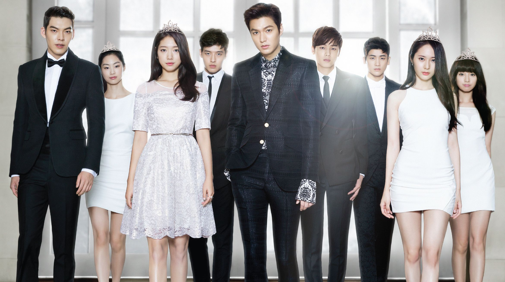

BOYS OVER FLOWERS
 Boys Over Flowers (en hangul, 꽃보다 남자),también conocida en Latinoamérica como Los chicos son mejores que las flores y en Chile como Casi el paraíso, es una serie de televisión surcoreana transmitida por KBS 2TV desde el 5 de enero hasta el 31 de marzo de 2009. Basada en el manga shōjo japonés, Hana Yori Dango (花より男子?) de Yōko Kamio. Boys Over Flowers se centra en un romance que ocurre en una escuela secundaria donde conviven los hijos de las familias con gran poder económico de Corea del Sur, en una historia protagonizada por Koo Hye Sun, Lee Min Ho, Kim Hyun Joong de SS501, Kim Bum, Kim Joon de T-Max y Kim So Eun.
Con 25 episodios, fue emitida las noches de los lunes y martes a las 22:00 (KST). El drama coreano obtuvo gran éxito tanto en Corea del Sur como también en gran parte del mundo y con el paso del tiempo se posicionó como uno de los éxitos más grandes de la hola Hallyu. Asimismo, ganó varios premios y fue emitida en varios países. Millones de fanáticos de Boys Over Flowers se quedarán con muchas ganas de ver a sus estrellas nuevamente juntas en la pantalla. Al punto de que aún hoy persiste la duda de que se habría una segunda temporada. Por lo pronto existe la descendente de Hana Nochi Hare: Hanadan Next Season que sería traducida como Boys Over Flowers: Segunda Temporada. La continuación de la japonesa Hana Yori Dango.THE HEIRS
 The Heirs (en hangul, 상속자들) también conocida en español como Herederos, es una serie de televisión surcoreana transmitida por Seoul Broadcasting System desde el 9 de octubre hasta el 12 de diciembre de 2013. La trama se centra en un joven heredero que conoce el amor en una joven que es hija de la ama de llaves de su casa. Con ella deberá luchar con determinación para acabar con las diferencias que los separan socialmente. Es protagonizada a lo largo de 20 episodios por Lee Min Ho que toma el papel de Kim Tan, el heredero del Jaeguk Group que se enamora de Park Shin Hye que en la serie ocupa el papel de Cha Eun Sang; además de las participaciones antagónicas de Kim Woo Bin, Kim Ji Won y Krystal Jung. Fue creada por Kim Eun Sook, quien anteriormente estuvo tras Jardín secreto (2010) y Como aman los hombres (2012). El drama está inspirado en una fusión entre Gossip Girl y Boys Over Flowers. Fue grabada en Seúl principalmente, pero también los primeros capítulos transcurren en Los Ángeles y Malibu, California. Muchos miembros del elenco ya se conocían por haber trabajado en otras producciones juntos, si has visto los dramas To The Beautiful You, Heartstrings, Tree of Heaven, You’re Beautiful, School 2013 y Faith. La popularidad de The Heirs lo llevó a convertirse en uno de los dramas más premiados en ese año. La producción de este drama fue una colaboración de la cadena SBS y la plataforma de streaming Drama Fever en el 2013.